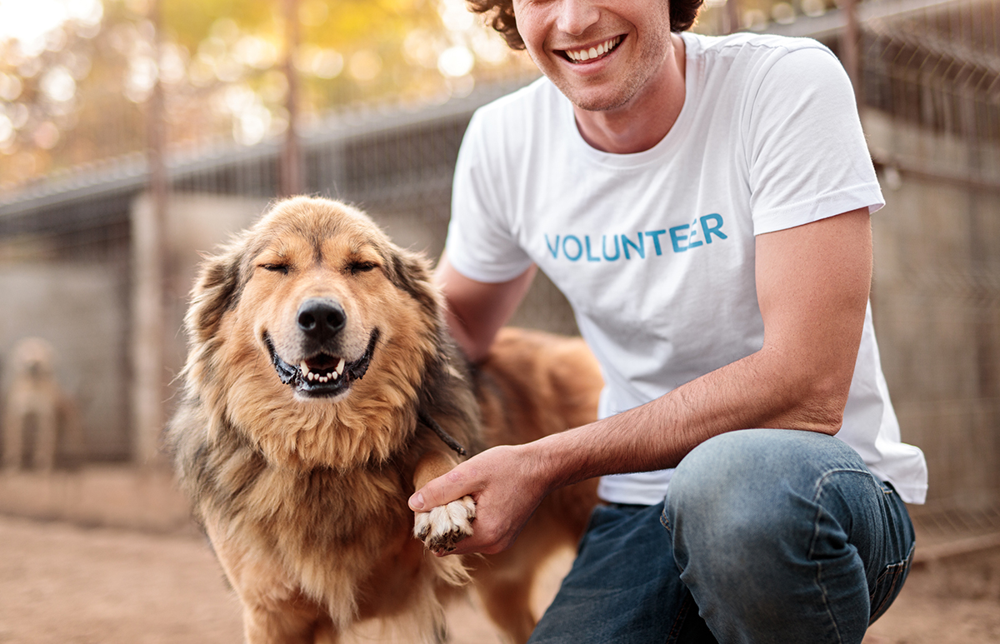
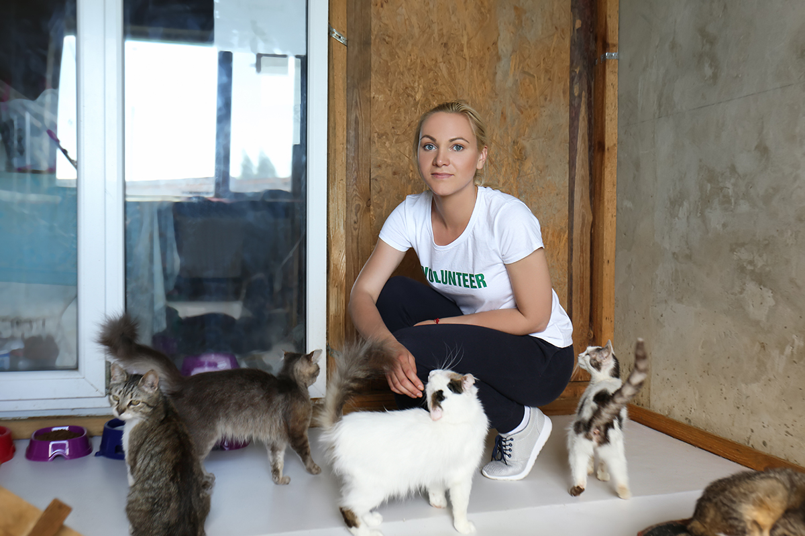

About
 Adoptables specializes in finding forever homes for adoptable pets in need. Our dedicated team of animal lovers works tirelessly to rescue and rehabilitate animals, ensuring they are ready for their second chance at a happy life. But we don't stop there! We offer a wide range of services to support both pets and their loving owners:
Adoption Services: Discover your perfect furry companion among our diverse selection of adoptable pets. Whether you're looking for a playful pup, a cuddly kitten, or a gentle senior, we have a pet waiting to steal your heart. Grooming: Our expert groomers pamper your pets, ensuring they look and feel their best. From stylish haircuts to soothing baths, we provide top-notch grooming services to keep your furry friends looking and smelling fabulous. Veterinary Care: Your pet's health and well-being are our top priorities. Our on-site veterinary clinic offers comprehensive medical care, vaccinations, and wellness checks to keep your pet in the best possible condition. Training: We understand that every pet is unique, which is why we offer personalized training programs to help them become the best versions of themselves. Whether you're dealing with behavioral issues or simply want to reinforce good manners, our experienced trainers are here to help. Join us at Paws and Hearts Rescue, where we believe that every pet deserves a loving home and a happy, healthy life. Together, we can make a difference, one paw at a time.
Staff
 Animal rescue organizations typically have dedicated staff and volunteers who work tirelessly to care for a wide range of animals, including cats, dogs, and smaller pets like rabbits, guinea pigs, hamsters, and birds. The staff involved in an animal rescue organization often includes the following roles:
Animal Caregivers: These individuals are responsible for the day-to-day care of the animals. This includes feeding, cleaning, providing socialization and exercise, and monitoring the health and well-being of the animals. They are often the ones who form strong bonds with the animals and help them on their journey to adoption.
Veterinarians and Veterinary Technicians: Animal rescues have veterinarians and vet techs on staff or on-call to provide medical care for sick or injured animals. They perform routine check-ups, vaccinations, and spaying/neutering surgeries.
Adoption Counselors: Adoption counselors help potential adopters find the right pet for their lifestyle and provide guidance on pet care. They ensure that the adoption process is a good match for both the animal and the adopter.
Administrative Staff: These staff members handle the organization's paperwork, including record-keeping, financial management, and correspondence. They may also coordinate events, fundraisers, and volunteer efforts.
Foster Coordinators: Many rescue organizations have a network of foster homes where animals are cared for until they are ready for adoption. Foster coordinators oversee this process, matching animals with appropriate foster homes and providing support to foster families.
Transport and Rescue Teams: These teams often work in conjunction with other rescues or shelters to move animals from high-kill shelters or dangerous situations to the safety of the rescue organization.
Behavior Specialists: These individuals work with animals that may have behavioral issues due to past trauma or neglect. They help rehabilitate and train the animals to improve their chances of being adopted.
Social Media and Marketing Specialists: Many rescue organizations have staff responsible for promoting the animals available for adoption through social media, websites, and other marketing channels. This is crucial for finding forever homes for animals.
Maintenance and Facilities Staff: These individuals are responsible for maintaining the shelter or rescue facility, ensuring it is safe, clean, and comfortable for the animals.
Volunteers: Volunteers are a vital part of animal rescue organizations. They assist with a variety of tasks, from animal care and socialization to administrative work, fundraising, and event support.
The care provided by the staff and volunteers in animal rescue organizations is essential for the well-being of the animals and for increasing their chances of finding loving homes. It's a collaborative effort that requires a diverse set of skills and a deep commitment to the welfare of animals in need.